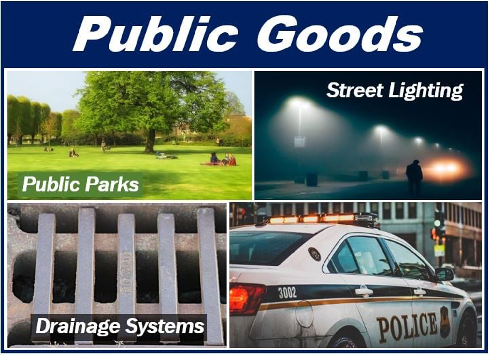
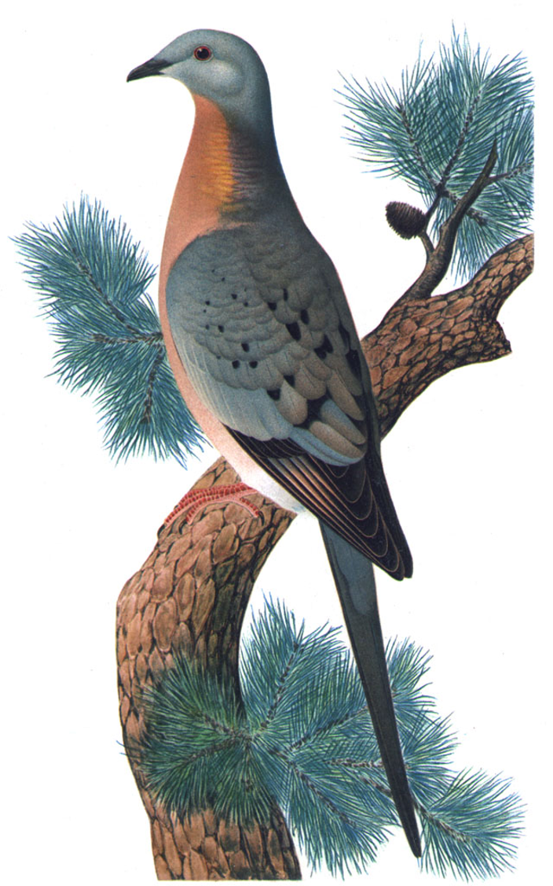
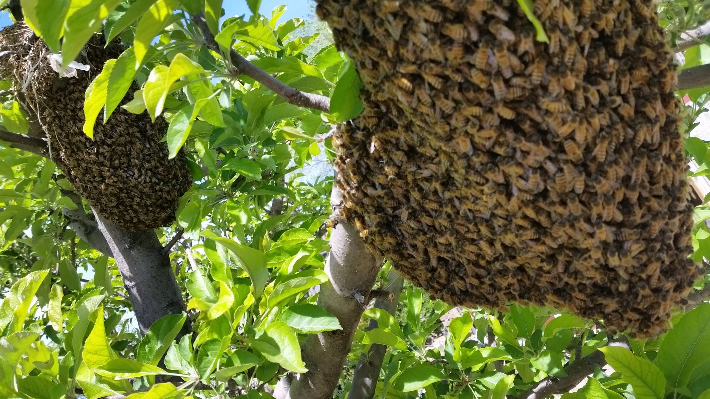
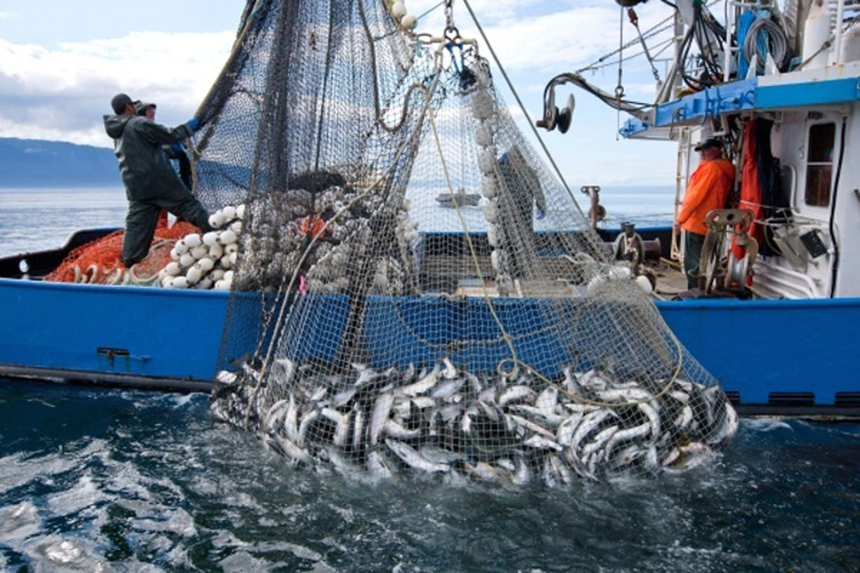

8 Market Failure: Public Goods, Public Bads, and Externalities
8.1 Open access
Why are many roads so annoyingly congested? Why are many fisheries threatened by over fishing? About a half century ago, a biologist at the University of California, Santa Barbara, warned of the “Tragedy of the Commons”’ and popularized concern with open access resources.
The tragedy, simply stated, is that when there are no owners of resources (such as the oceans or common grazing grounds) or if the owners are public entities which exert no control over use (such as open roads), then there is a real risk that the resources will be overused.
Such resources are termed open access (anyone may access them), common property (everyone owns the property and has access), or common pool (everyone is drawing from a common pool). We will use the three terms interchangeably.
A simple example of the problem of open access is the divided highway/road (free way/motorway/autobahn), at least in cases where access is not regulated (i.e., when motorists can freely enter and leave the road). In many urban areas, these roads become highly congested, particularly at certain times of the day, and traffic may slow from a normal speed of 80 kph to much lower levels (e.g., 20 kph) or even come to a dead stop. Why does this occur? And what can be done about it?

Another example comes from urban air pollution, particularly in years prior to serious regulatory attention to the problem, which began in the mid-20th century. The air shed had been open access for polluters. Factories and automobiles alike treated the urban air shed as common property-everyone’s property for waste disposal but nobody’s property in terms of regulating use. The result was over use of the air shed-excessive pollution. What options are open to fix this?
The decimation of the American passenger pigeon is a sad example of an open access resource resulting in extinction of a species. The pigeon stock was open access and a tasty morsel for the settlers in 19th century America. The pigeon is now extinct due to over harvesting. Why did this occur and what could have been done to prevent it?

8.2 Externalities
An externality occurs when one person’s or firm’s actions affect another entity without permission. If I like to play my stereo loudly, my neighbors must listen as well. A fisher entering an open access fishery makes it more difficult for all the existing fishers to catch fish.
Of course, there can also be positive externalities. In a classic example of externalities, the owner of an apple orchard provides a positive externality for a neighboring apiary (in terms of the quantity and sweetness of the honey). And the apiary provides a positive externality to the orchard in terms of the bees pollinating the apple blossoms.

DEFINITION: An externality exists when the consumption or production choices of one person or firm enters the utility or production function of another entity without that entity’s permission or compensation.
8.3 Public goods and bads
- Economics has defined two fundamental characteristics of goods: excludability and rivalry. Excludability has to do with whether it is possible to use prices to ration individual use of the good. Rivalry has to do with whether it is desirable to ration individual use, through prices or any other means.
8.3.1 Excludability
To be able to use prices to allocate a good, it is necessary to ensure that consumers do not consume a good unless an appropriate price has been paid. Thus ti must be possible to keep the consumer from the good. This is excludability. Not all goods are excludable.
An example is the fishery on the high seas. Keeping consumers (in this case fishers) from using this resource is very difficult (i.e., costly). As an example of a bad, air pollution is also nonexcludable. Air, of whatever level of cleanliness, is all around us. We cannot exclude certain people from consuming air pollution.

DEFINITION A good is excludable if it is feasible and practical to selectively allow consumers to consume the good. A bad is excludable if it is feasible and practical to selectively allow consumers to avoid consumption of the bad.
Why is excludability important? Because to attach a price to the consumption of a good or bad, we have to be able to deny that consumption if the price is not paid. This is how market allocation works. For a good, this is a straightforward concept. If I produce hamburgers, I must be able to deny you the right to consume a hamburger unless you pay for it.
Another example of a nonexcludable good would be a city park without a fence and entrance control. I cannot charge for admission because anyone can use the park, whether or not they have paid admission. Thus no one will pay admission. A fence and entrance control could be added, but this would be so expensive that its cost could outweigh any benefits associated with restricting entry to the park.
Generally, we would expect to see exclusion only when the benefits of exclusion outweigh the costs of exclusion. Exclusion must be not only technologically possible but also not too costly, relative to the benefits of exclusion (if any). This is the reason the word “practical” is used in the definition of exclusion.
For a bad, the concept is a little more subtle. Household garbage is excludable with the right laws on littering and trespass; it is not excludable without those laws. Suppose I have generated some household trash and wish to pay someone to consume it (i.e., store it safely). Without laws on trash disposal, whom- ever I pay to dispose of my garbage could simply leave ti by the side of the road or throw it back into my yard. With laws preventing such actions, when I pay someone to consume my trash, that person must retain control of the trash until someone else voluntarily (i.e., with pay) agrees to take it.
8.3.1.1 Two factors play major role in excludability
One is the cost of exclusion
The other is the technology of exclusion and how it changes over time
For instance, a case applies to television, particularly those programs disseminated via satellite and cable. Historically, it has been too expensive to exclude consumers. However, with the development of low-cost signal scramblers and unscramblers, exclusion became economically feasible, particularly for high value programs such as recent films.
Environmental goods have undergone some change in excludability over the past few decades, mostly through legal rather than technological changes. The simplest example is garbage (like the normal household type). Without institutions, garbage is not excludable. Without laws against littering, garbage will simply be dumped wherever convenient, much as it was in the Middle Ages in Europe when people would throw it out their window onto the street. This, however, has been defined as littering or creating a nuisance and is illegal in most locales. Consequently, garbage is now excludable. People can selectively choose to trade money and garbage. This is the economic transaction of the trash collector and the household. This legal aspect of excludability of course could also apply to ordinary goods. Without laws protecting property and outlawing stealing, all goods would be open access and exclusion would not be possible.
Why is excludability important? For a price system to work it must be possible to take possession of the good or bad for which the price is being paid. Without excludability, a price system cannot work.
8.3.2 Rivalry
A second important characteristic of goods is rivalry. This is a slightly more subtle concept than excludability. Rivalry pertains to the manner in which a good is consumed. As an example, compare the consumption of a bratwurst with that of a flower garden.
For the bratwurst, the act of consumption destroys the good and makes it unavailable for anyone else to consume. In contrast, the act of consumption of a flower garden involves light bouncing of flowers and being transmitted to the eyes of the consumer. This is fundamentally nondestructive to the flower garden and in no way diminishes the ability of someone else to “consume” the flower garden in precisely the same way.
Examples of goods and bads:
| Rival | Nonrival | |
|---|---|---|
| Excludable | Goods: Burger Bads: Household garbage today |
Goods: Local public beach with access control Bads: Water pollution in small lake |
| Nonexcludable | Goods: Fishery Bads: Household garbage in Middle Ages |
Goods: National defense or global climate Bads: Greenhouse gases |
Quiz 11
Please check the KUTLMS.
References:
- Charles D. Kolstad (2010), Environmental Economics (2nd Edition), Oxford University Press, New York